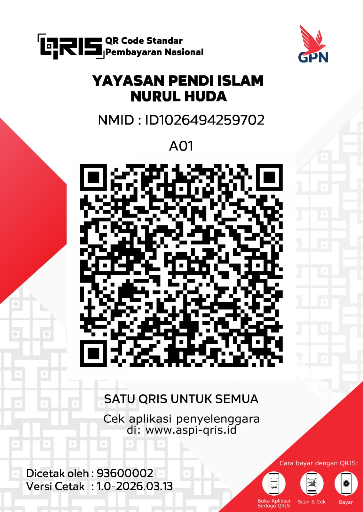

🌿Mari bersama kami menanam amal jariyah dengan mendukung kegiatan pendidikan dan sosial di Yayasan Pendidikan Islam Nurul Huda. Setiap rupiah yang disalurkan menjadi cahaya ilmu dan keberkahan bagi generasi penerus umat.
🌿 Maka marilah kita jadikan sedekah bukan beban, tapi kehormatan. Karena saat Allah memberi kesempatan lewat pintu sedekah, berarti Dia sedang menawari kita untuk menjadi bagian dari kisah kebaikan yang tak pernah padam.

KODE QRIS YAYASAN
📍 Alamat: Ngablak, Cluwak, Pati, Jawa Tengah
📞 Telepon / WA : 0823-2415-3933
📧 Email: info@yayasannurulhuda.or.id